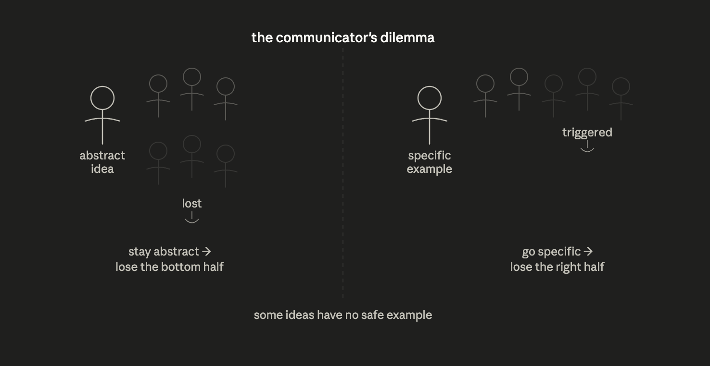

Anti-fnords, or, What text can be now
Paper broadcasts: one text, many readers. Thus far electronic text mimics paper. Poorly. But it doesn't have to. Not anymore. Electronic text can be an entirely new thing. A small statement, with big consequences.
Motivation
Some ideas are hard to convey.
Received wisdom tells us what to do with those. If, for example, an idea is too abstract then you should ground it with examples. But what if the only examples you can use to illustrate an idea make you lose half your audience?
That's the problem I've been wrestling against for the past half decade: I've been trying to get across a number of ideas. Unfortunately, nearly all examples I found to illustrate them are political. Reliably I either choose one set of examples — and lose half the audience — or a different set — and lose the other half. Alternatively I can choose neither and just speak in a very abstract way. Then I usually lose the bottom half.

:(
This is bad. I don't want to lose any half of my audience: I want the ideas to come across!
Now, this only applies to online writing. In person, speaking to someone live, I can route around this problem: I can gauge their facility with abstraction and their political preferences, and package my message in a way that is not just accurate but maximally friendly to whatever else they already believe as well. But, in writing, you can't do that.
Or can you?
Anti-Fnord technology
LLMs have opened new possibilities for what electronic text can be. They let you do things that, before, you could do only in person.
An example: my first idea to route around the problems above was to have a small quiz at the beginning of a text that would place you, ideologically.
Depending on where you'd land it would swap in examples that would not trigger you into not reading further. By the end of the text the ruse would be revealed, hopefully making people curious enough to scroll back to the beginning and answer differently so they can read again, this time in "hard mode". This would lead to tons of cognitive dissonance as their mind ran anew through arguments which structure they had already assented to, now with examples that would've made them stop reading had they read them first.
Power you trust today will be wielded against you tomorrow.
There's a mistake almost everyone makes when they're winning: they mistake their grip on institutional power for the rightness of institutional power itself.
Consider universities using DEI statements as hiring filters. Whatever you think of the content, notice the structure: a small, unaccountable body decides which beliefs disqualify someone from a job.
Institutions outlive coalitions. The tools you build to enforce your values become, within a decade, tools your opponents use to enforce theirs. The censorship apparatus progressives cheered during COVID is now being pointed elsewhere.
Hopefully hopefully hopefully that would help overcoming the dissonance.
On-demand Depth
Another problem I've had, trying to convey ideas via text, is scoping. I don't know what people know and don't know, and my solution has been to take many haphazard stabs at the same ideas: from different angles, with different depths, from different backgrounds. But this is a brute-force approach that requires creating multiple artifacts and, thus, consumes a lot of time.
Recently, I tried a different approach: I made an exposition website where many of the terms were recursively expandable, the idea being that if you already agree you could carry on, but if some concept was new or some term didn't make sense you could click it to "go deeper" into it until it did and then "come back up".
But that too was time-intensive: it required a custom website and "hard coding" each page of iterative depth — all for one sentence.
What if there was another way? What if, instead of proactively providing depth to capture all cases where it might be required, depth was generated reactively?
Footnotes are the old-school way of straddling the balance above: the prose continues for those who can continue, and numbered footnotes tell those who need or want details where they can find them. But what can footnotes to electronic text be?
What if you could, still, if you agreed with it, just read past a claim but, if you didn't, click it to expand the supporting evidence and the sources for that evidence?
On the rise of remote work.
Remote work isn't reverting. The 2020 shift looked like an emergency, but five years on it's clear the emergency revealed preferences that already existed.
What changed wasn't the technology — video calls worked before — but the coordination problem. Once enough workers had remote as a live option, companies competing for talent couldn't unilaterally pull it back.
Many more
I found the first two affordances trying to solve my problems of exposition through electronic text. But I'm convinced many more exist. And not just for my purpose of exposition.
For example, here's a third one, built for an entirely different purpose:
The worst person in the world.
[NAME]. Notice what happens in your body as you read [NAME]. That tightening, that flicker of preemptive defense or attack.
[NAME], [NAME], [NAME]
That's what reactivity feels like.
The reader supplies their own variable to the text and the hardcoded "intelligence" of the fixed text is in knowing what the variable actually corresponds to. (Not actually "the worst person in the world" but just the one that triggers this specific reader the most.)
Conclusion
Originally I created the first two "tricks" above to address my own frustrations. But, in making them, I ended up realizing something grander.
Paper cannot respond to who's reading it. But electronic text can. For the past 40 years we've been using screens to simulate paper. But the medium is capable of way more than that and LLMs just made that "more" tractable.
The three tricks — like Jobs' three devices — are three instances of the same thing: the same old text, now with a reader model. That's what changed. Paper can't have a reader model. A pre-LLM webpage can, but only for whatever variables the author hand-coded. LLMs make reader-modeling cheap and general — which means text itself can now contain something paper never could.
It took 30 years after the invention of the electric guitar to reveal what it could do. Until then, people played it like an amplified acoustic guitar. It took Jimi Hendrix to change that.
Similarly we've been using electronic text as if it were glorified paper. But now, 40 years after its invention, LLMs have shown us what it can do.
Above I explored 3 affordances of electronic text in the age of LLMs. I think there are many more like these. I don't claim to know the shape of the whole space. But I know it exists and I want others to know that too, which is the point of writing this down in text1.
We are still in the early days. And now text reads you.
P.S.: Every affordance described above is dual-use. No further details for obvious reasons.
1. Broadcast text, to be exact. ↩